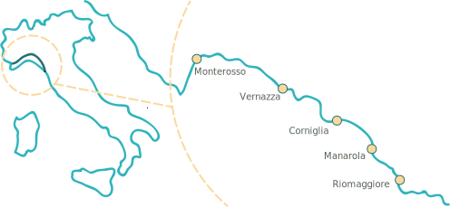

1000
Gli insediamenti raggiungono la costa
Le Cinque Terre sono un frastagliato tratto di costa della Riviera ligure di levante situato nel territorio della provincia di La Spezia tra Punta Mesco e Punta di Montenero, nel quale si trovano cinque borghi o, come si diceva anticamente, terre: Monterosso al Mare, Vernazza, Corniglia, Manarola, Riomaggiore.
Grazie alle caratteristiche geografiche ed antropiche del territorio dove sorgono, le Cinque Terre sono considerate una delle più suggestive attrattive costiere italiane, per il loro contesto orografico collinare naturalmente aspro e accidentato, addolcito dalla costruzione di terrazzamenti o fasce per la coltura, che cala verso il mare con forti pendenze; nei punti in cui il mare si insinua serpentinamente nella terra sorgono i borghi, snodati a seguire la naturale forma delle colline.
L'opera dell'uomo, nei secoli, ha modellato il territorio costruendo i famosi terrazzamenti sui declivi a mare, dovuta alla particolare tecnica agricola tesa a sfruttare per quanto possibile i terreni posti in forte pendenza che digrada verso il mare, ne ha fatto così uno dei più caratteristici e affascinanti paesaggi della Liguria.
L'Italia, insieme alla Cina, è il paese che detiene il record di maggior numero al mondo di patrimoni
dell'umanità dell'UNESCO con 55 beni nella lista nel 2019.
Sono inoltre, al 2019, 41 i siti italiani candidati alla lista dei patrimoni dell'umanità.
Si tratta di luoghi ben conosciuti come Le Dolomiti, la Città di Verona, Ferrara e il Delta del Po, al
Nord; numerosi centri storici e parchi naturali.
Tutti luoghi che almeno una volta nella vita sono stati oggetto del desiderio di viaggiare per conoscere
e vivere la storia, l'arte e la cultura del Bel Paese.
Il sito Unesco delle Cinque Terre comprende, oltre ai cinque meravigliosi borghi, tre piccole isole e una cittadina più grande: Porto Venere, definita spesso la sesta terra.
Se le tre isole sono quasi disabilitate e ci consentono di ammirare la bellezza della natura, ma il punto forte dei cinque borghi è proprio l’unione del paesaggio agli interventi umani: le tipiche case-torri genovesi a picco sul mare danno vita ad un romantico paesaggio d’altri tempi.
| Paese | Tipologia | Abitanti | Superficie |
|---|---|---|---|
| Monterosso | Borgo | 1400 | 10.9 |
| Vernazza | Borgo | 786 | 12.3 |
| Corniglia | Borgo | 195 | 2 |
| Manarola | Borgo | 353 | - |
| Riomaggiore | Borgo | 1460 | 10.3 |
| Porto Venere | Città | 3472 | 7.7 |
| Palmaria | Isola | 34 | 1.9 |
| Tino | Isola | 0 | 0.13 |
| Tinetto | Isola | 0 | 0.01 |
Gli insediamenti raggiungono la costa
Le terre passano sotto il controllo della Repubblica di Genova.
Anno al quale risale il documento più antico delle cinque terre
Vernazza partecipa con Genova alla guerra di corsa contro i pisani
Il pirata Dragut assale le coste, deportando gli abitanti
La Repubblica di Genova viene annessa al regno di Sardegna.
Completata la ferrovia, che rompe l'isolamento secolare del luogo.
Nasce la Via dell’Amore
Le Cinque Terre entrano nel patrimonio Unesco